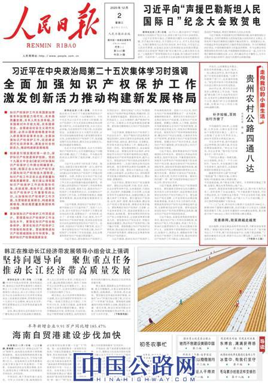

您好，欢迎来到中国高速公路网—21世纪公路网！
 作者：程焕
来源：交通运输部官微
作者：程焕
来源：交通运输部官微
 时间：2020-12-02
时间：2020-12-02
2015年以来，贵州先后启动农村公路建设三年会战等攻坚行动，全省农村公路新改建里程5.9万公里，截至目前，贵州农村公路里程达18.6万公里。12月2日，人民日报头版【走向我们的小康生活】专栏刊发文章，聚焦贵州农村公路建设，全文如下↓↓↓

早饭后，山间薄雾还未散去，把农具和肥料搬上电动三轮车，一曲山歌还没哼完，陈中松就来到了自家的金银花基地。“公路不仅修到了家门口，还直通田间地头。”家住贵州省务川仡佬族苗族自治县石朝乡浪水村的老陈说。
2015年以来，贵州先后启动农村公路建设三年会战、“组组通”硬化路三年大决战等攻坚行动，全省农村公路新改建里程5.9万公里，建成7.87万公里通组硬化路，实现30户以上村民小组100%通硬化路。
补齐短板
百姓出行方便了
平均海拔约1200米，山高坡陡、石多谷深，石朝乡是贵州省20个深度贫困乡镇之一，连片大山阻隔了这里与外界的交往，2016年贫困发生率高达28.1%。
早在20多年前，陈中松就尝试过种烤烟，因为路不通，所有农资都要肩挑背驮，“种出来不容易，卖出去更难。”陈中松只好和老乡们一样外出务工。
“当时全乡都没一条硬化路，43公里路程，我坐了一个半小时的车。”2016年，申友能调任石朝乡党委委员、组织委员，从县城来报到时的情景至今还记得。
随着贵州农村公路“村村通”“组组通”等工程的实施，石朝乡短短3年就建成128公里硬化路，不仅连接县城，串户路也实现了硬化。乡里顺势发展起了香榧、金银花、精品水果等特色山地产业。
2018年，看到老家的路变得四通八达，陈中松不再外出务工，在村里种了10亩金银花。“车子能直接开到地里，不但方便运农资，采下的鲜花也不愁卖。”今年试采效果不错，老陈盘算一下，明年进盛产期后，亩产值六七千元不成问题，下一步打算把种植规模扩大到20亩。
“十三五”以来，贵州农村公路累计完成投资1268亿元，新增5295个建制村通硬化路，启动实施3万公里县乡公路路面改善提升工程，全省所有建制村100%通客运班线，重点推进1725个500亩以上坝区实现等级公路全覆盖。
完善路网
致富路越走越宽
国庆假期，正值长顺县高钙苹果采收季，不断有游客来到果园，广顺镇石板村种植大户丁福洲忙得不亦乐乎。“每天能卖出几千斤苹果，剩下的卖给电商平台，压根不愁没销路。”丁福洲自豪地告诉记者，果园不仅让自己腰包鼓了，还带火了周边的农家乐。
地处麻山腹地，森林覆盖率超60%，长顺县山货资源丰富，绿壳蛋鸡、高钙苹果、紫王葡萄、优质核桃等特色农产品名声在外。但在三五年前，苦于山高坡陡、交通闭塞，农产品销售不畅，老乡们盼着通路。
把交通建设作为脱贫攻坚基础性工作抓！长顺县近年来构建起串联各村组和乡镇、连接城区和对外通道的县域农村公路交通网，推进交通与产业融合发展。
“以前物流站点不能覆盖村镇，老乡要到县城才能收寄包裹，耽误工夫不说，来回车费也不少。”周兵是广顺镇电商服务站的工作人员，每天上门收集好老百姓的山货，只需跑一趟镇里的客运站，就能把农产品发往全国各地。
2019年，长顺县启动“多站合一、五位一体”的融合工程，整合公路管养、路域执法、城乡公交、农村客运、电商物流五大功能，鼓励农村客运车辆代运邮件，并整合利用供销基层物流站点，构建起县、乡、村三级物流体系。
“城乡客运票价平均下降了45%，既降低了群众出行和物流成本，又盘活了客运班线资源。”长顺县交通运输局局长赵萍介绍，目前全县农村公路1612公里，在方便群众出行的同时，也打通了城货下乡的“最后一公里”与黔货出山的“最初一公里”。
依托农村公路交通网，贵州大力推进“交通+旅游”“交通+电商”“交通+特色产业”等扶贫新模式，沿线受益群众达1200余万人，其中建档立卡贫困人口达183万人，带动农业产业发展500余万亩、乡村旅游村寨突破3000个。
群众参与
建管养运一盘棋
“三分建，七分养”，把路修好只是起点，后期高质量的养护与管理措施同样关键。
47岁的李正才是兴义市七舍镇糯泥村建档立卡贫困户，也是村里6名公路养护员之一。“好不容易修好的公路，必须得好好管护，大伙增收致富全指望它们呢。”每天沿着公路巡护，除了打扫卫生，清理边沟，遇到路面损坏或路基塌陷等情况，李正才还要及时上报镇里找人维修。
在兴义市，像李正才一样的护路员有386人，其中贫困群众258人，人均年增收约6000元。自通村通组公路项目建设以来，兴义市全面推行市、乡、村、组四级农村公路“路长制”100%全覆盖，启动以乡镇、村为单位组建农村公路养护扶贫专业合作社，既破解农村公路养护难题，又能实现贫困户就业增收。
针对农村公路管理养护体制不顺、资金不足等问题，贵州今年出台《贵州省全面深化农村公路管理养护体制改革实施方案》， 明确农村公路日常养护资金为省市县三级财政负责筹集，鼓励采用以奖代补等方式，推广将日常养护与应急抢通捆绑实施并交由群众承包。
截至目前，贵州农村公路里程达18.6万公里，新增开发农村公路养护就业援助岗位万余个。据贵州省公路局测算，按照新管理办法，每年可归集农村公路日常养护资金8.66亿元、通组公路养护资金1.18亿元。从2021年开始，农村公路养护资金不足问题将得到逐步破解。
打开贵州省“四好农村路”综合管理系统，立马显示出全省农村公路路网结构的基本情况。“每一段路归哪个地方管理、具体有哪些养护人员，动动手指就一目了然。”贵州省公路局农村处处长张杰介绍，系统通过GPS采集路线空间信息，与卫星遥感图片进行比对分析，可对全省农村公路的建养管运进行全方位监管。
如今，贵州94.5%的乡镇设置了交通管理站，56个县区落实县乡村三级农村公路“路长制”，一大批乡镇和建制村把农村公路工作纳入乡规民约、村规民约重要内容，形成了“公路大家建、建好大家管、管好大家用”的良好局面。
【编辑：王珏 QQ：1485994861；TEL：13810405128/010-84990788—1369】
【审核：耿茁、孙婧】
 微信公众号
微信公众号
 微信订阅号
微信订阅号